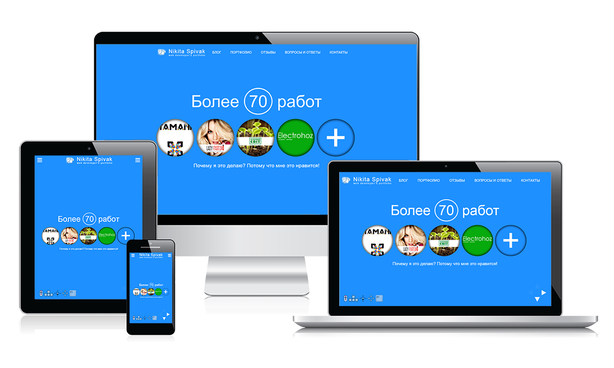

Адаптивность сайта
Адаптивность сайта — это возможность сайта правильно отображаться на разных устройствах с различными характеристиками.
Сегодня сайты просматриваются на персональных компьютерах, планшетах, смартфонах. Каждое устройство со своими характеристиками — скоростью работы, разрешением экрана.
Если сайт не адаптивен, то на компьютере он отобразится правильно. А на телефоне может “поехать” — блоки наложатся друг на друга, шрифт может стать нечитаемым.
Сам термин адаптивность получил широкое применение после выхода книги Итана Маркотта Responsive Web Design – отзывчивый веб-дизайн. Сайты, способные динамически подстраиваться под заданные характеристики устройств просмотра стали называть адаптивными.
Зачем нужен адаптивный сайт?
Технологии развиваются стремительными темпами, производители техники не отстают от них. Смартфоны, планшеты, телевизоры, другие электронные устройства, подключаемые к сети интернет, выпускаются на любой вкус и бюджет, вариантов размера экрана множество.
Процент устройств, позволяющих просматривать информацию онлайн растет с каждым годом. Разнообразие форматов и разрешений усложняет процесс разработки в целом, дополнительные требования приходится учитывать на всех этапах: дизайнерам, и верстальщикам, и программистам.
Концепция адаптивного дизайна позволяет оптимизировать процесс, поскольку не нужно создавать несколько вариантов сайтов, как это было ранее, например, с мобильными версиями. В том случае проектировался отдельный набор функций на отдельном поддомене.
Существуют сервисы для проверки, насколько сайт соответствует требованиям адаптивность.
Принципы адаптивности
Поточность
Предположим, вы разработали дизайн для десктопных браузеров. Все круто. При просмотре этого сайта с мобильного устройства блоки смещаются и идут друг под другом.
Это называется потоком. И сейчас это один из основных принципов, который используется в адаптивном дизайне. Учитывайте это.
Использование контрольных точек
Это элементы, чьё расположение меняется только если для просмотра используется определенное устройство с заданными параметрами экрана.
Например, если содержимое страницы “уползает”, то имеет смысл добавить такую точку и зафиксировать контент.
Правильные шрифты
Веб-шрифты выглядят красиво. Но не забывайте, что все они подгружаются. Это сказывается на скорости загрузки страниц у пользователя.
Проверка сайта на адаптивность
Например, в Google Chrome есть встроенный инструментарий для проверки дизайна сайта на корректность к отображению на мобильных устройствах. Нужно нажать клавишу F12 или Ctrl+Shift+I, либо выбрать в Меню «Дополнительные инструменты» - «Инструменты разработчика».
В Mozilla Firefox это можно сделать таким образом «Меню» — «Разработка» — «Адаптивный дизайн», либо Ctrl+Shift+M.
Kроссбраузерность
Для просмотра интернет-сайтов пользователи сети Интернет используют специальные программы — браузеры. Еще несколько лет назад посетителям интернета были известны лишь один-два разных браузера
В связи с этим появилось понятие кроссбраузерности — понятие, описывающее свойство сайта идентично работать и отображаться во всех браузерах
С чего начать?
Чтобы сайт одинаково смотрелся и в Internet Explorer, и в FireFox, и в Opera, и в Google Chrome причем самых разных версий, веб-дизайнер должен позаботиться о кроссбраузерности своего детища с самого начала работы над проектом.
Необходимо определиться, с какими именно браузерами должен работать сайт. Для этого нужно изучить статистику посещений сайтов (например, со схожей тематикой), в которой есть возможность посмотреть, какими браузерами пользовались его посетители. Сервис Google Analytics, например, предоставляет такую возможность.
Дело в том, что разные браузеры хоть и соблюдают общие правила и стандарты, но может случиться так, что алгоритмы обработки html- кодов и каскадных таблиц css у них окажутся разными.
Если необходимо корректно отображать сайт, скажем, в трех браузерах, то нужно написать по префиксу для каждого из этих браузеров.
Где тестировать?
Проводить тестирование сайта на кроссбраузерность лучше всего на локальном компьютере, на котором установлены разные браузеры, разные версии браузеров и существует возможность изменять разрешения монитора.
Для облегчения проверки сайта на совместимость с разными браузерами есть уже готовые утилиты и онлайн сервисы. Используя такие сервисы Вы избавите себя от установки всех проверяемых браузеров или версий браузеров